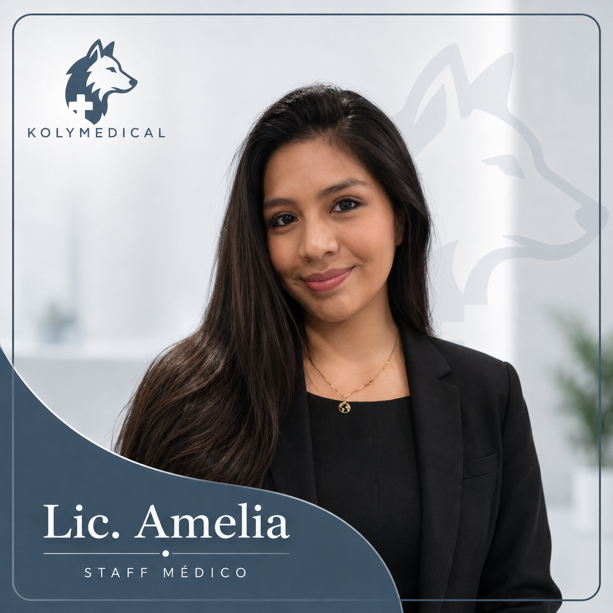
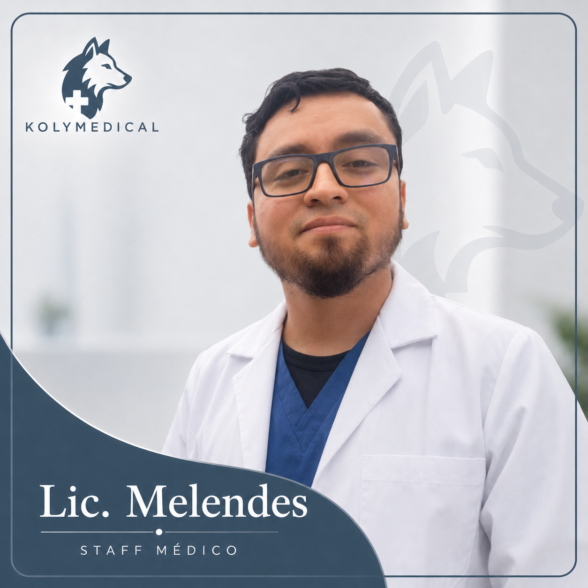
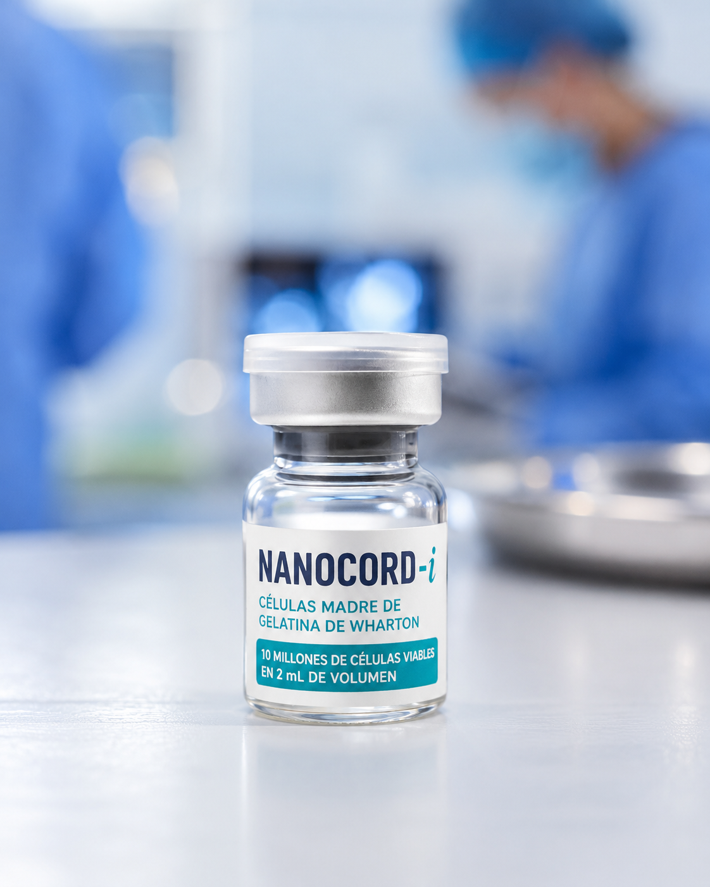
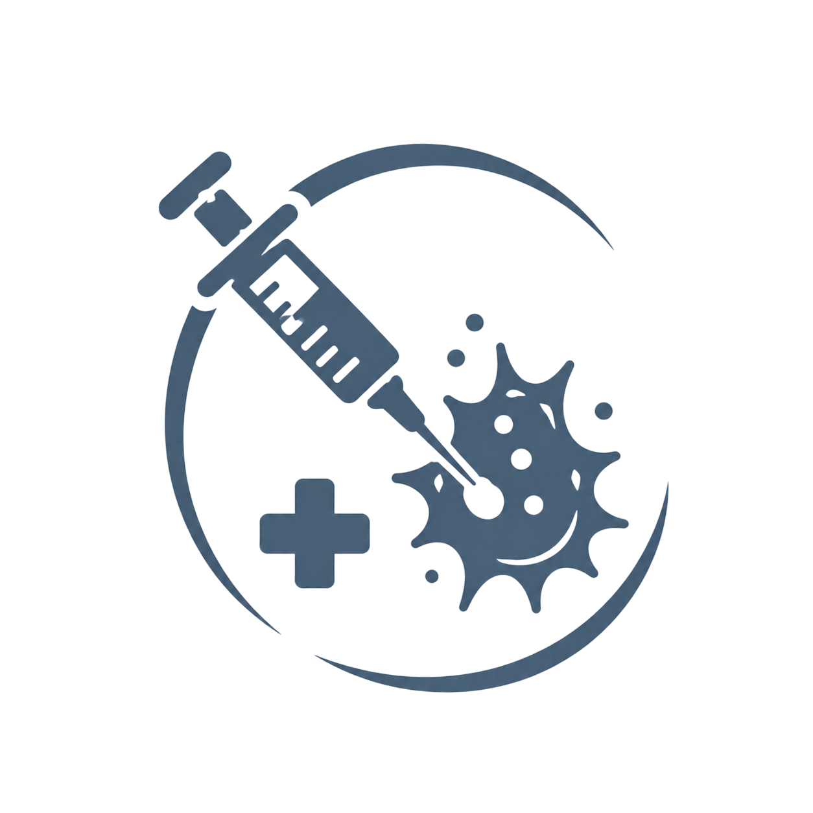
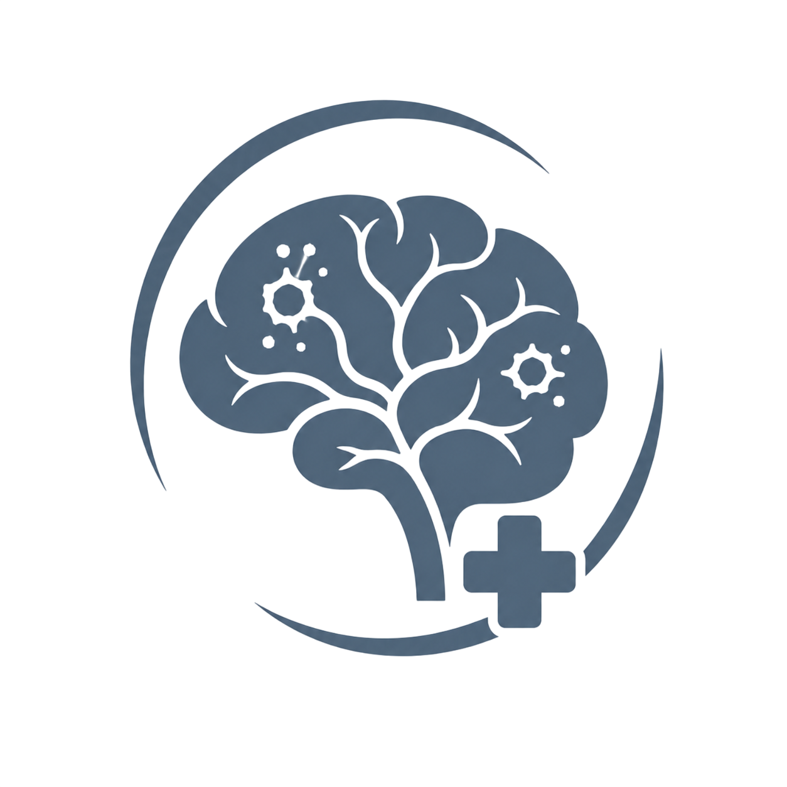
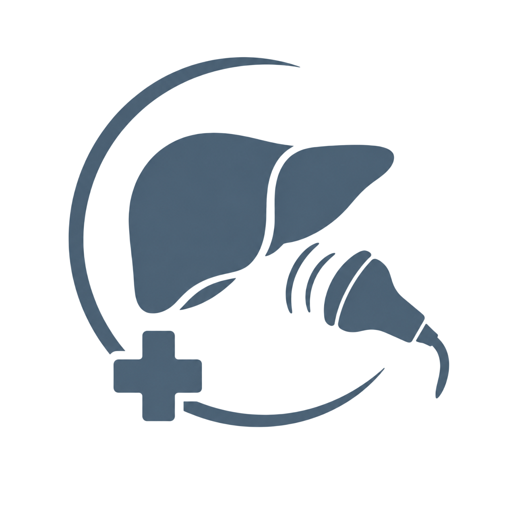
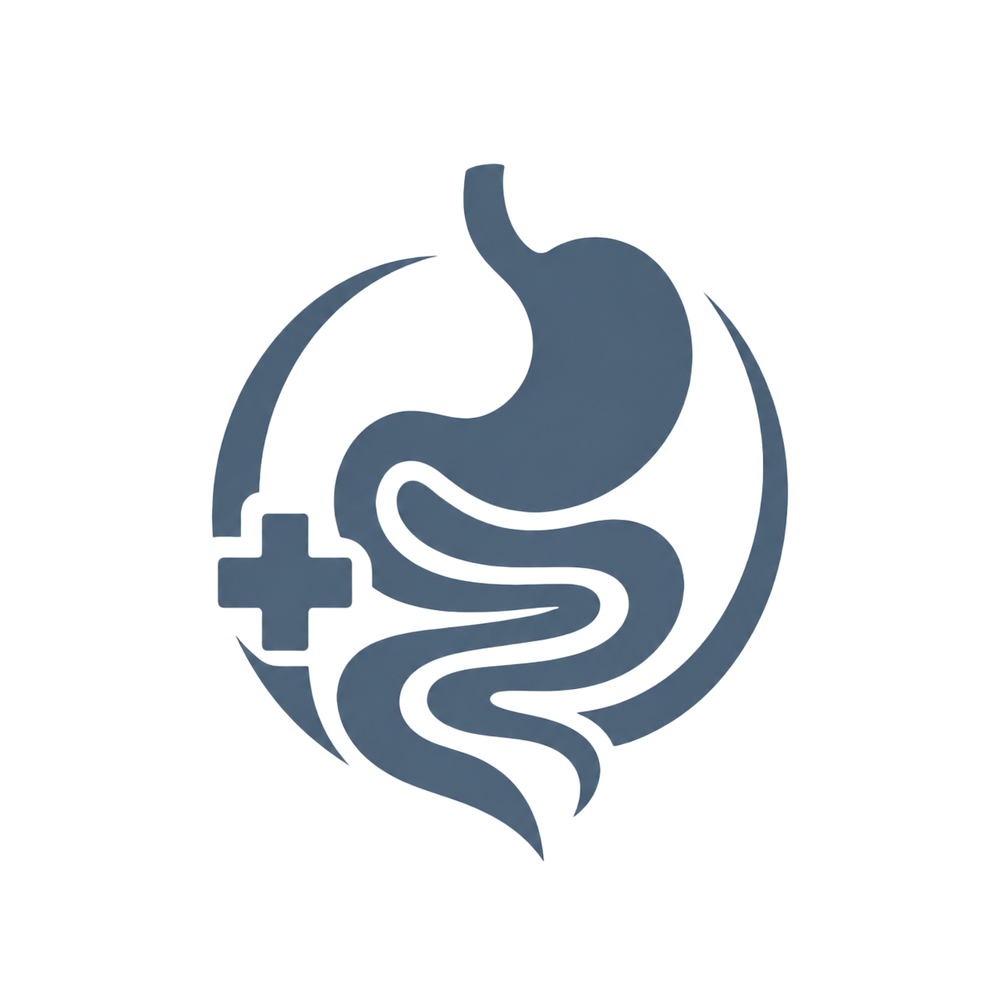

En KolyMedical brindamos soluciones médicas integrales y de vanguardia. Especialistas en medicina regenerativa con células madre y diagnóstico avanzado no invasivo para restaurar tu salud y mejorar tu calidad de vida.
Sede Principal en Perú
Av. Venezuela 6113, Lima, Perú
Modalidad de Atención:
Presencial en sede & consultas virtuales en todo el Perú.
Nuestro modelo estructurado de atención acompaña al paciente en cada etapa, garantizando precisión clínica y soporte humano continuo.
Recopilamos tus datos, síntomas, antecedentes y exámenes previos para construir una historia clínica inicial detallada.
Analizamos las condiciones específicas del paciente y los factores de riesgo con tecnologías no invasivas.
Diseñamos un plan terapéutico a medida combinando medicina regenerativa, nutrición, psicología y soporte integral.
Coordinamos y aplicamos el tratamiento en nuestras sedes bajo los más estrictos estándares con especialistas calificados.
Realizamos evaluaciones periódicas de control para optimizar resultados y medir la evolución clínica del paciente.
Profesionales altamente calificados comprometidos con tu bienestar y recuperación integral.


Ofrecemos un abordaje médico integral y de vanguardia. Los tratamientos regenerativos principales son realizados por el Dr. Joan Manuel Pedraza La Barrera, apoyado de forma interdisciplinaria por especialistas de soporte y exámenes auxiliares de alta tecnología.
La medicina regenerativa representa una alternativa complementaria y avanzada frente a los tratamientos convencionales. Mediante la aplicación de células madre adultas y factores inductores biológicos, nos enfocamos en detener el daño tisular y revertir la progresión de enfermedades crónicas, autoinmunes y degenerativas.
Todos nuestros protocolos principales son diseñados y dirigidos por el Dr. Joan Manuel Pedraza La Barrera, garantizando el máximo estándar en trazabilidad y precisión celular.

Disminuye el dolor crónico permitiendo recuperar la movilidad diaria.
Estimula la regeneración natural del cartílago, tendones y ligamentos.
Evita o posterga cirugías invasivas de reemplazo articular (prótesis).
Modula la cascada inflamatoria rodeando los nervios comprometidos.
Fortalece el soporte ligamentoso y muscular de los segmentos espinales.
Reduce la compresión y el adormecimiento irradiado a miembros inferiores.
* Seguimiento clínico especializado por Gastroenterología
Las MSC promueven la regeneración de hepatocitos y mejoran la arquitectura hepática.
Disminuye la activación de células estrelladas, limitando el depósito de colágeno fibrótico.
Mejora parámetros bioquímicos cruciales: transaminasas, bilirrubina y síntesis de albúmina.
Optimiza la oxigenación general y reduce la disnea (falta de aire) de esfuerzo.
Ayuda a frenar la progresión del endurecimiento de las paredes alveolares pulmonares.
Reduce la hiperreactividad y la inflamación obstructiva del árbol respiratorio.
Ofrecemos un tratamiento celular personalizado mediante la preparación y aplicación de autovacunas oncológicas. Este protocolo complementa los tratamientos convencionales y tiene como fin reactivar el propio sistema inmunitario del paciente para reconocer y combatir células tumorales específicas.
Patologías de Apoyo: Cáncer de mama, cáncer de hígado, tumores sólidos y soporte inmunológico avanzado post-quimioterapia.

Protocolos enfocados en la neuroprotección y en mitigar la tasa de neurodegeneración celular. Mediante factores liberadores y secretoma de células madre adultas, se busca brindar un soporte biológico al tejido nervioso central y periférico.
Patologías Abordadas:

El **FibroScan** (elastografía hepática) representa un examen auxiliar diagnóstico crucial y no invasivo. Permite medir y estadificar de forma inmediata la rigidez del hígado, hígado graso (esteatosis) y cirrosis hepática sin necesidad de biopsias dolorosas ni agujas.
Es una herramienta esencial indicada por el médico especialista para el diagnóstico precoz y monitoreo continuo de cirrosis hepática o fibrosis del tejido pulmonar.
* Realizado de forma presencial por el especialista Dr. Ruslan Golovliov.

Especialidades transversales encargadas de realizar las consultas de control, seguimiento y coadyuvancia en la nutrición, digestión y bienestar psicológico de nuestros pacientes en tratamiento regenerativo.
Planes alimenticios terapéuticos adaptados a pacientes metabólicos y crónicos.
Control: Lic. Amelia
Diagnóstico, control y tratamiento de patologías digestivas y gastritis crónica.
Control: Dr. Joel MoralesEvaluación y tratamiento de afecciones del oído, nariz y garganta.
Control: Dr. Guido MontesAcompañamiento emocional y mental indispensable para afrontar enfermedades crónicas y degenerativas.
Control: Lic. Ricardo MelendesImágenes reales de nuestros procedimientos clínicos y tratamientos aplicados.

Preparación hermética y estéril de fórmulas terapéuticas biológicas.

Células madre de cordón umbilical obtenidas de Gelatina de Wharton.
Costos transparentes de evaluación inicial. Los tratamientos regenerativos se cotizan de forma personalizada según el estadio clínico del paciente.
¿Tienes consultas o deseas una pre-evaluación rápida? Escríbenos directamente a WhatsApp y un asesor comercial te guiará.
Enviar Mensaje a WhatsAppHorario de Atención: Lunes a Viernes 9:00 am - 6:00 pm | Sábados 9:00 am - 2:00 pm